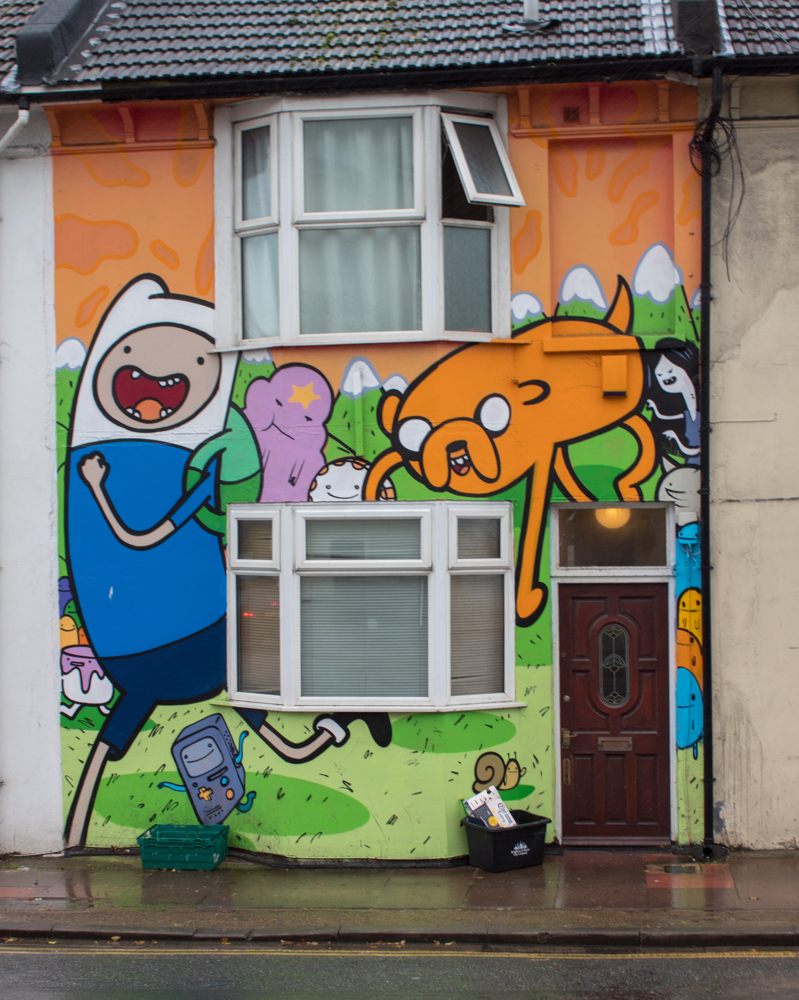
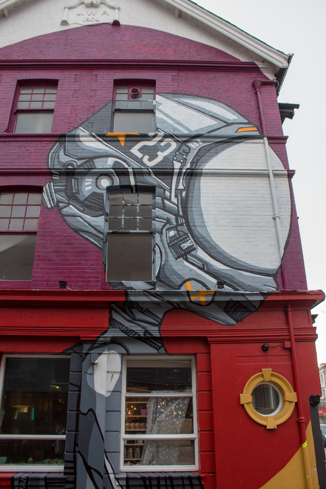
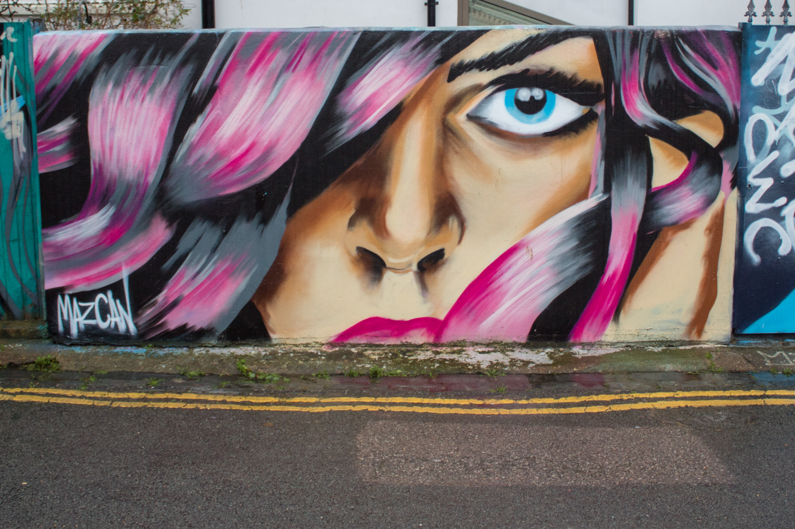
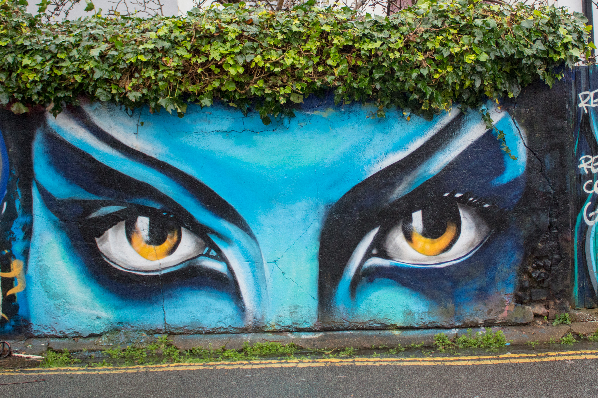

Background
While walking around Brighton I always see lots of street art and graffiti, so I thought it would be fun to create a guide and share with you the locations of some street art around Brighton. This by no means all the street art that Brighton has to offer.
Below is a map with all the locations I discuss pinned, so you too can go and view all of these locations around Brighton yourself.
This guide I more of descriptive gallery, as there is not much more I can do then show you pictures of the street art and their locations.
The houses
While walking down Upper Lewis road you can see two houses covered in giant paintings, both of which are paintings of cartoon shows. One of the paintings is Jake and Fin from the program, Adventure Time. The other painting is of Rick and Morty from the show Rick and Morty. I really like the paintings because they are actually pretty good in terms of their detail and of the programs they represent.

Game characters
The first game related to painting is the mushroom from Mario and is located along Upper Lewis road. I like this one because it’s very simple and ‘clean’. The Second piece of street art is the mosaic, I think this piece is cool because it’s different from the others and stands out a lot more.
Big Alien Guy
On the walk towards the train station of can see this giant painting of what looks like a futuristic astronaut of possible alien guy. I like the detail of this painting and the size of it is very impressive.

The Prince Albert
As well as being a decent place to grab a few drinks The Prince Albert some very cool portraits of famous people painted on the side of it. As you can see the portraits are not bad at all.

Trafalgar Lane
This is a good place for street art in Brighton. The entire lane is covered in all kinds of street art, some a lot better than other. I hope you enjoy the collection of images I have taken of some of the art down the lane.

